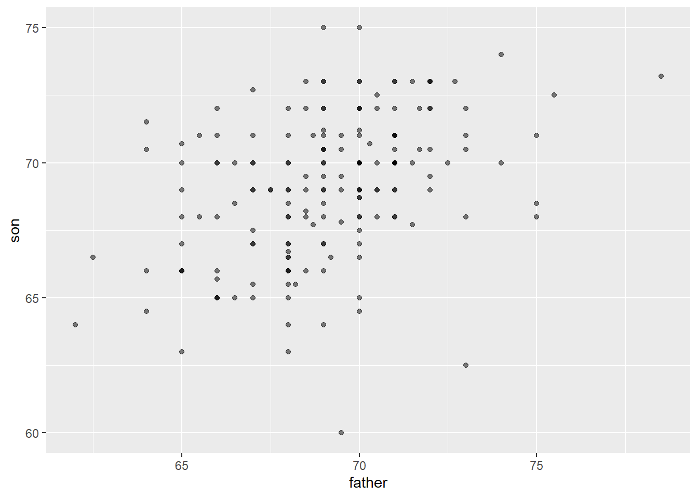
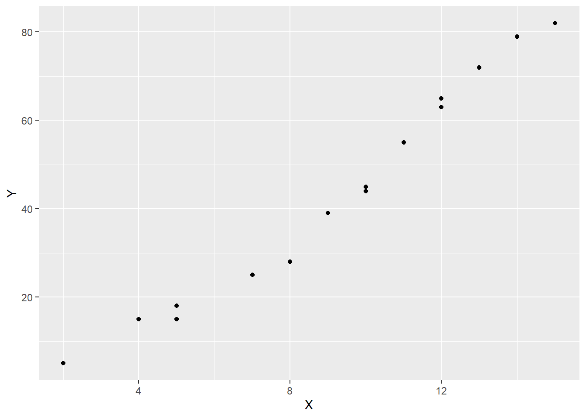
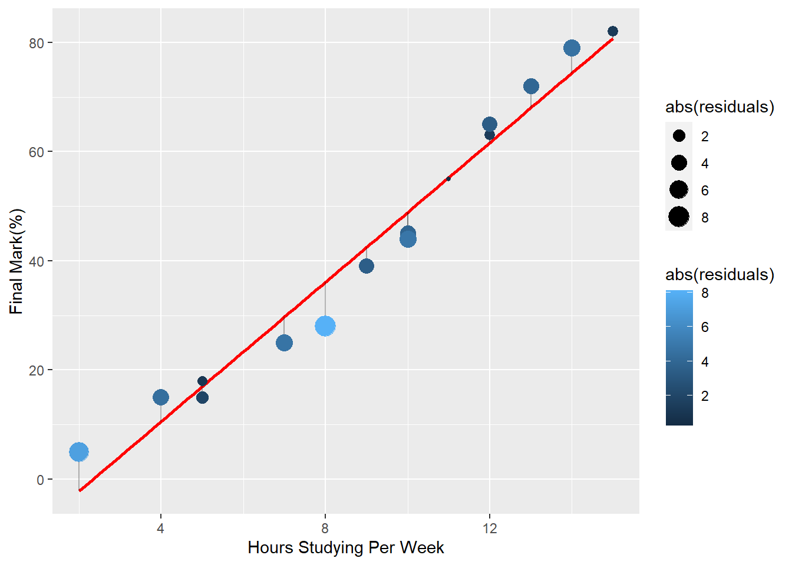

Chapter 5 Simple Linear Regression
Understanding how variables are related is critical in data analysis. One of the most basic models used to understand relationships between different variables is called the simple regression model. The simple regression model is used to examine the relationship between two variables.
5.1 Regression History
The term “regression” in data analysis was first introduced by Sir Francis Galton in the late 19th century. Galton was a British polymath who made important contributions to a wide range of fields, including statistics, psychology, and biology. Galton was interested in the relationship between the heights of fathers and their sons, and he observed that while the heights of sons tended to be closer to the average height of the population as a whole, they also tended to be closer to the average height of their fathers than to the population average. Galton called this phenomenon “regression to the mean”.
The term “regression” referred to the idea that, over time, extreme values tend to move back towards the average or mean value. This idea was later applied to statistical models in a variety of fields, including economics, and the term “regression” became a standard part of the statistical and econometric lexicon. Today, regression analysis is a widely used statistical technique in economics, finance, biology etc. and this technique is used to estimate the relationship between a dependent variable and one or more independent variables. The goal is to identify the extent to which changes in the independent variables are associated with changes in the dependent variable.
5.1.1 Galton Heights Data
The HistData package gives us access to Galton’s family height data. Lets load this into RStudio and expore a few things about the data. The code data(“GaltonFamilies”) loads the “GaltonFamilies” dataset into R from the package. This dataset contains information on the heights of parents and their children, as collected by Sir Francis Galton in the late 19th century. The “HistData” package, which contains a collection of historical datasets that are useful for teaching and research in statistics and data science. You can explore the data set for your learning purposes. If the package is not already installed in your R environment, you may need to install it using the install.packages(“HistData”) command before you can load the dataset. Once the dataset is loaded, you can use R functions to explore and analyze its contents. For example, you might use the summary() function to get an overview of the dataset’s variables and their distributions, or the plot() function to create visualizations of the data.
# load the HistData package.
library(tidyverse)
library(HistData)
# load the GaltonFamilies dataset from the HistData package into the R session
data("GaltonFamilies")
galton_heights <- GaltonFamilies %>%
filter(gender == "male") %>%
group_by(family) %>%
sample_n(1) %>%
ungroup() %>%
select(father, childHeight) %>%
rename(son = childHeight)
galton_heights %>%
summarize(mean(father), sd(father), mean(son), sd(son))## # A tibble: 1 × 4
## `mean(father)` `sd(father)` `mean(son)` `sd(son)`
## <dbl> <dbl> <dbl> <dbl>
## 1 69.1 2.55 69.1 2.65Though this code looks intimidating, there is not much to it really. We will expalin it line by line. When anything is not clear, feel free to use the code documentation, stack overflow or any AI tool like chatGPT, which is my favourite.
This code creates a new data frame called galton_heights, which contains information on the heights of fathers and their first-born sons:
- ‘GaltonFamilies %>%’: This pipes the GaltonFamilies dataset into a series of data transformation functions.
- ‘filter(gender == “male”) %>%’: This filters the data to include only observations where the child is male.
- ‘group_by(family) %>%’: This groups the data by family, so that we can select one observation (i.e., the first-born son) per family in the next step.
- ‘sample_n(1) %>%’: This selects one observation per family at random. ungroup() %>%: This removes the grouping by family, so that we can select specific variables in the next step.
- ‘select(father, childHeight) %>%’: This selects the variables father and childHeight (i.e., the height of the father and the height of the first-born son). rename(son = childHeight): This renames the childHeight variable to son.
# Scatter Plot
galton_heights %>% ggplot(aes(father, son)) +
geom_point(alpha = 0.5)
The code ‘geom_point(alpha = 0.5)’ adds a layer to the cose using a ‘+’ and it specifies that the plot should be made using points, with a transparency level (alpha) of 0.5. The geom_point function is used to create the scatter plot.
5.2 Getting Started The Simple Regression Model
Think about this: if you study this course for two hours every week, do you think you will pass it and with what mark? Now imagine you study this course for ten hours a week putting 2 hours everyday, Monday to Friday, one hour understanding the theory and another hour coding, how is your final mark likely to change? I am going to assume you would expect a higher mark if you put in the hours? This is perfect example of how two variable, marks and hours of study are related. Your final mark clearly depends on the hours you spend studying hence the final mark is called the dependent variable whilst the hours spent studying are called the independent variable. For simplicity and as is standard in literature, we are going to call the dependent variable \(Y\) and the independent variable \(X\). The dependent variable is also called regressand or the explained, response or predicted variable whilst the independent variable is also called the regressor or the explanatory, control or predictor variable. Just know these words can be used interchangeably but for the avoidance of confusion, we will stick to dependent and independent variables.
# Load the tidyverse package. ggplot2 is part of this package
library(tidyverse)
# load the hours of study and marks respectively
X <- c(2, 4, 5, 5, 7, 8, 9, 10, 10, 11, 12, 12, 13, 14, 15)
Y <- c(5, 15, 15, 18, 25, 28, 39, 45, 44, 55, 63, 65, 72, 79, 82)
# Save the data i a frame as mark_sheet
mark_sheet <- data.frame(X, Y)
#View(mark_sheet)
# Plot the scatter plot using ggplot2
scatter_1 <- mark_sheet %>% ggplot(aes(x = X, y = Y)) +
geom_point()
# Generate the scatter plot
scatter_1
What we can seen from the scatter plot is that there is an obvious positive relationship between the time one puts into studying and the final mark, that is, the more one studies, the higher the final mark is likely to be.
The idea is to estimate a perfect straight line relationship between these variables and this relationship takes the form:
\[\begin{equation} y = \beta_0 + \beta_1x + \upsilon \tag{1} \end{equation}\]
For a given population, equation (1) defines the simple linear regression model which is also called the two-variable linear regression model or bivariate linear regression model because it relates the two variables x and y. We will discuss more simple linear relationships in this section but for now, we have to understand how we get this relationship. We will use the ordinary least sqaured regression method.
5.3 Ordinary Least Squares Estimations
We will use the hours of study and marks dataset to understand ordinary least squares regression, simply known as OLS. The idea behind OLS is to find a linear relationship that minimizes the sum of the squared residuals or errors. The values we have from our sample are the actual values and the values obtained by estimating a straight line are called the predicted values. The residual or the error is the difference between the actual values and the estimated values. Consider the values give in the table below that we have have already used to get our scatter plot.
| Hours/Week (X) | 2 | 4 | 5 | 5 | 7 | 8 | 9 | 10 | 10 | 11 | 12 | 12 | 13 | 14 | 15 |
|---|---|---|---|---|---|---|---|---|---|---|---|---|---|---|---|
| Marks (Y) | 5 | 15 | 15 | 18 | 25 | 28 | 39 | 45 | 44 | 55 | 63 | 65 | 72 | 79 | 82 |
The equation that relates these variables is given by:
\[\begin{equation} y_i = \beta_0 + \beta_1x_i + \upsilon_i \tag{2} \end{equation}\]
Where \({(x_i, y_i): i = 1,.....,n}\) denote a random sample of size \(n\) from the population. In our case, the \(n = 15\). \(\upsilon_i\) is the residual term for each observation \(i\) because it contains all factors affecting \(y_i\) other than just \(x_i\). We assume that the expected value of the residuals is zero, that is:
\[\begin{equation} E(\upsilon_i) = 0 \tag{3} \end{equation}\]
The graph below shows the predicted straight, red, and the difference points obtained from our scatter plot.

The difference between the actual observed points and the estimated line is what we are calling the residual.
5.4 Simple Linear Regression Assumptions
5.4.1 Linearity:
The relationship between the dependent variable and the independent variable is linear. This means that the change in the dependent variable is proportional to the change in the independent variable. This assumption can be checked by creating a scatter plot of the data and visually assessing whether the data points appear to follow a straight line.
5.4.3 Independence:
The residuals are independent. In particular, there is no correlation between consecutive residuals in time series data.
5.4.4 Homoscedasticity:
The variance of the residuals is constant across all levels of the independent variable. This means that the spread of the residuals is consistent across the range of the independent variable. This assumption can be checked by creating a residual plot and visually assessing whether the spread of the residuals appears to be constant.
5.4.6 Normality
The residuals are normally distributed. This means that the distribution of the residuals should be symmetric and bell-shaped. This assumption can be checked by creating a histogram or a normal probability plot of the residuals and visually assessing whether the distribution appears to be normal